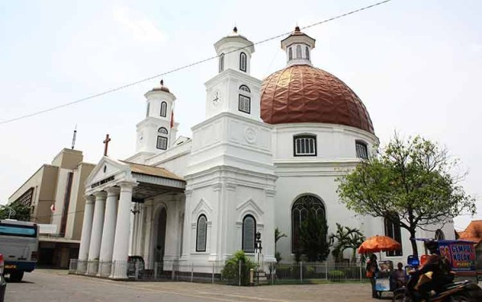

ika sudah Anda mengenal Kota Tua di Jakarta, maka Kota Lama Semarang adalah salah satu tempat wisata di Jawa Tengah yang dikenal banyak kalangan penikmat perjalanan. Anda dapat menemukan rekaman tata bangun wilayah berarsitektur Eropa yang ada di tempat ini. Objek wisata di Semarang yang satu ini dijuluki pula sebagai “Little Netherland”.
 Landmark paling menarik di kawasan Kota Lama adalah Gereja Blenduk, sebuah bangunan berusia lebih dari 2.5 abad. Kata blenduq berasal dari bahasa Jawa, yang berarti kubah, merujuk pada kubah gereja ini. Atapnya yang melengkung dan berwarna merah terasa kontras dengan dindingnya yang bercat putih. Empat pilar kokoh dan menara kembarnya yang khas di bagian depan membentuk ciri khas gereja yang satu ini.
Kota Lama Semarang merupakan destinasi favorit bagi para penikmat sejarah dan pecinta fotografi yang ada di Indonesia. Selain Gereja Blenduk, Kawasan Stasiun Tawang dan Polder Air Tawang adalah landmark lain yang patut Anda kunjungi saat berada di Kota Lama Semarang. Di area Polder, terdapat pabrik rokok Praoe Lajar (Prau Layar) yang masih beroperasi sejak dulu sampai sekarang. Menikmati suasana di Kota Lama Semarang pada malam hari adalah salah satu cara terbaik di tempat ini.
Alamat: Jl. Kartini, Semarang, Jawa Tengah